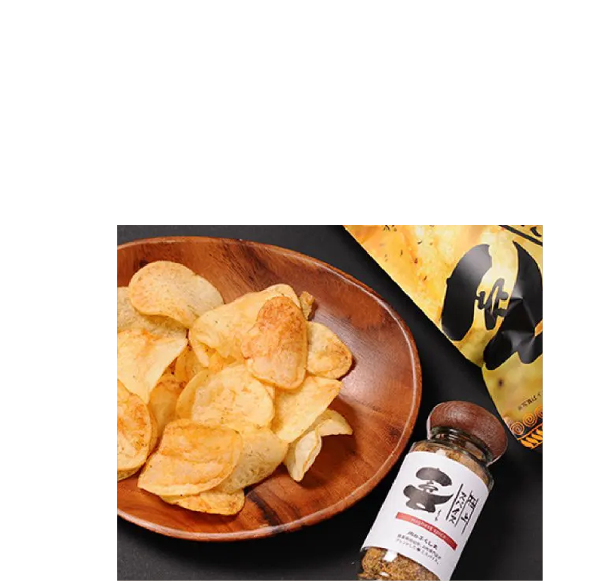
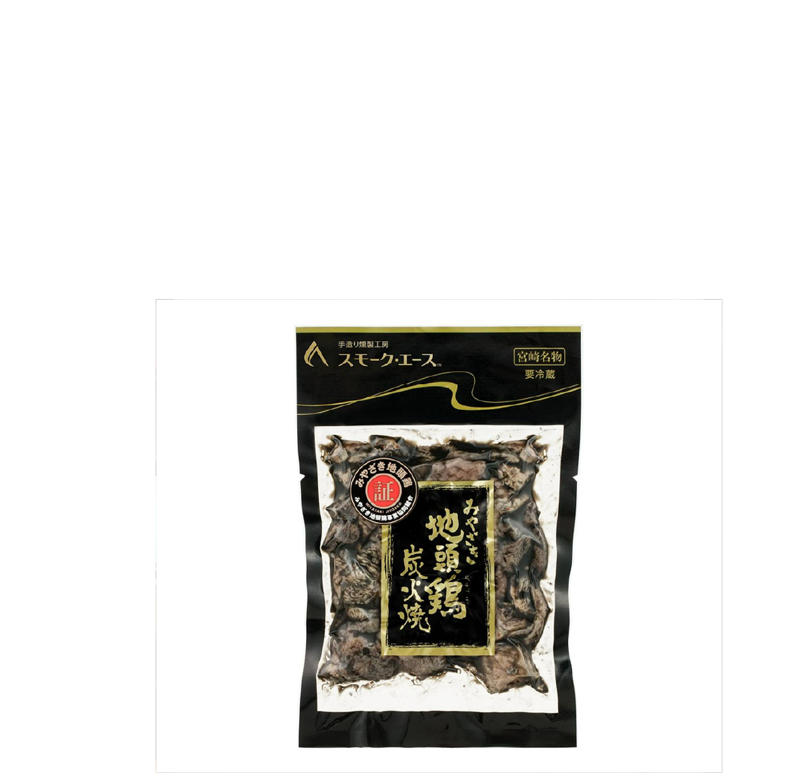

-
宮崎県
宮崎県は、青い海と豊かな緑に囲まれた自然あふれる土地です。高千穂峡や天孫降臨の神話にまつわる神社など、歴史と信仰が息づいています。 日向夏や地鶏などの地元グルメも楽しめ、温かな人々とのふれあいの中で、自然と文化、食をゆったり味わえる旅の県です。

お土産
-

みやざきてげなポテトチップス
みやざきてげなポテトチップスは、宮崎県都城市にある「肉のふくしま」が開発したポテトチップスです。このポテトチップスは、極上スパイス「喜」を使用しており、ガーリックや唐辛子のピリッとした辛さと醤油の深い味わいが特徴です。ビールや日本酒などのアルコールとも相性が良く、様々な料理にアレンジして楽しむことができます。また、宮崎県の郷土料理「チキン南蛮」の味を再現したバージョンもあり、特に人気があります
-

宮崎産きんかんはちみつ漬け
大分県のソウルフード「とり天」をモチーフにしたユニークなお土産菓子です。サクサクとした軽い食感のせんべいに、鶏の旨味や香ばしさを加え、甘辛い風味とスパイスのアクセントを楽しむことができます。
-

宮崎地鶏炭火焼
地鶏の炭火焼」は小さく切った宮崎の地鶏を塩やコショウで味付けして強い火力の炭火で一気に焼き上げる宮崎県の郷土料理です。 強火で炭のすすで真っ黒になるほど焼き上げるのが特徴で、特に炭火でもも肉を焼いたものは絶品です。
観光地
-

山之口町
宮崎県の「山之口町」は、自然と歴史が調和したのどかなまち。四季折々の花や緑に囲まれた風景が広がり、古墳群や伝統行事など見どころも満載です。地元の人々の温かさに触れながら、ゆったりとした時間を過ごせる癒しの観光スポットです。
-

波切神社
宮崎県日南市にある「波切神社」は、海の安全と豊漁を願う人々に親しまれてきた神社です。美しい海を望む高台に立ち、潮風とともに心洗われる時間を過ごせます。朱色の鳥居と青い海のコントラストが映える、写真映えスポットとしても人気です。
-

大島
宮崎県延岡市の沖合に浮かぶ「大島」は、美しいエメラルドグリーンの海に囲まれた自然豊かな離島です。透明度抜群の海ではシュノーケリングや釣りが楽しめ、夏には海水浴客でにぎわいます。静かでのんびりとした島時間が流れ、心も体もリフレッシュできる癒しのスポットです。
体験
-

宮崎県立西都原考古博物館
宮崎県西都市にある西都原考古博物館では、古墳時代の歴史や文化に触れられます。出土品の展示や発掘体験で、昔の人々の暮らしを学びながら楽しめるスポット。親子での学び旅や歴史好きの方にぴったりの、わくわくする体験が待っています。